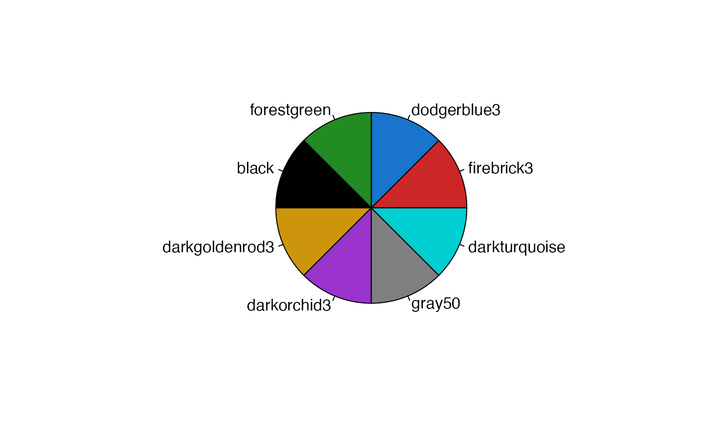

This function loads various generic and JGCRI specific color palettes charts and maps.
jgcricol(palx = NULL, alpha = NULL)Palette name to view the palette jgcricol. e.g. jgcricol(palx="pal_basic")
Default = NULL. Parameter to add transparency.
A list of color palettes.
List of Color Palettes
"pal_all"
"pal_16"
"pal_basic"
"pal_hot"
"pal_wet"
"pal_div_wet"
"pal_div_BlRd"
"pal_div_RdBl"
"pal_div_BrGn"
"pal_div_GnBr"
"pal_div_BluRd"
"pal_div_RdBlu"
"pal_green"
"pal_div_BrGn"
"pal_div_BlRd"
"pal_sankey"
"pal_spectral"
"pal_scarcityCat"
library(jgcricolors)
# To see all available palettes
names(jgcricol())
#> [1] "pal_all" "pal_16" "pal_seq" "pal_basic"
#> [5] "pal_hot" "pal_green" "pal_wet" "pal_div_wet"
#> [9] "pal_div_RdBl" "pal_div_BlRd" "pal_div_GnBr" "pal_div_BrGn"
#> [13] "pal_div_BluRd" "pal_div_RdBlu" "pal_sankey" "pal_spectral"
#> [17] "pal_scarcityCat"
# How to use palettes:
pal1 <- jgcricol()$pal_basic
pal2 <- jgcricol("pal_basic")

pals <- jgcricol()
pal3 <- pals$pal_basic # This way will auto populate the options after pals$